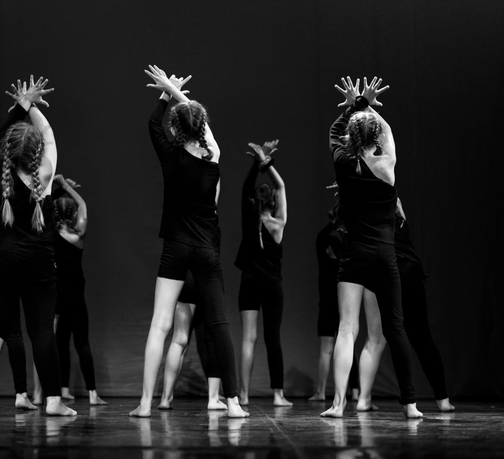
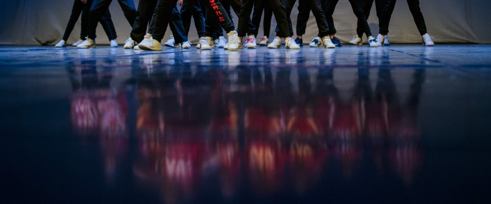
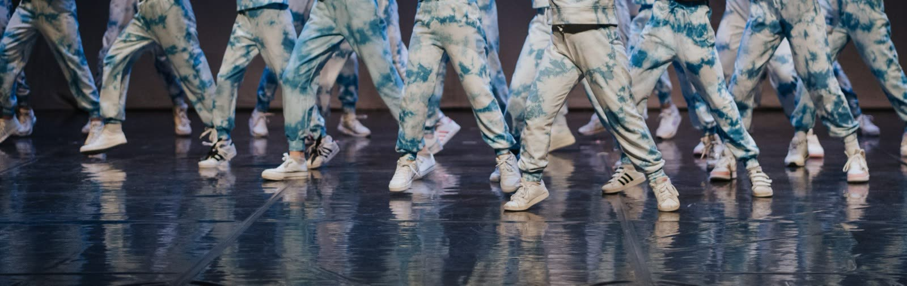
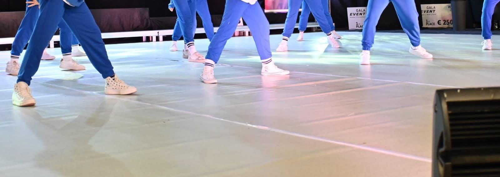
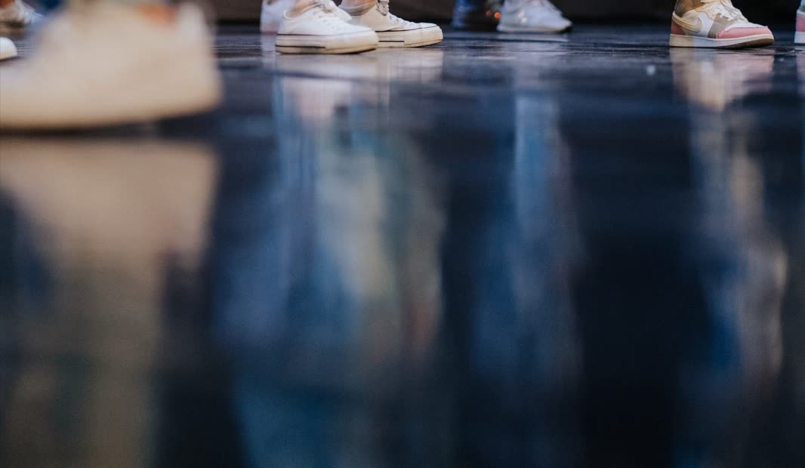
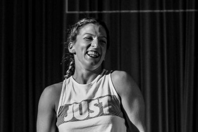
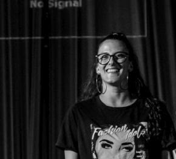

Umjetnička organizacija iz Rijeke koja djecu i mlade uči hip hopu, street danceu i MTV commercialu.
Plesni centar Beat osnovan je 2009. godine s ciljem edukacije djece i mladih urbanim plesnim tehnikama. Posebno se posvećujemo najmlađima, pa plesna igraonica počinje već od treće godine.
Iza nas su brojni nastupi na kulturnim manifestacijama i visoki rezultati na plesnim natjecanjima, a sezonu zaokružujemo završnom plesnom produkcijom, poput one u Hrvatskom kulturnom domu na Sušaku.
Za svaki uzrast
svoj ritam.
Plesna igraonica
Prvi korak u svijet pokreta: ples kao igra i zabava.
5–7god.Predškolski program
Motoričke kretnje, ritam i prve plesne koreografije.
7–15god.Školski program
Za djevojčice i dječake kroz cijelu osnovnu školu.
SŠ+fakultetProgram za mlade
Da ples i tjelesna aktivnost ostanu dio zdravog života.
60minZumba® Fitness
Latino ritmovi, laka koreografija i puno zabave za odrasle.
Na pozornici.






Ekipa koja
voli plesati.


Na plesnom podiju smo najsretniji.
Skupina ljudi koji vole plesati i uvijek su spremni zasukati rukave. Ako i vi volite ples i želite nam se pridružiti, javite nam se.
Javi nam seUpisi u sve
uzrasne skupine
Početnik ili napredni plesač, dobrodošli su svi od 3. godine nadalje. Za informacije o upisima i rasporedu javite nam se izravno.
Od koje dobi se dijete može upisati?
Od 3. godine. Plesna igraonica namijenjena je djeci od 3 do 5 godina, predškolski program djeci od 5 do 7, a školski program djevojčicama i dječacima od 7 do 15 godina. Za srednjoškolce i studente postoji program za mlade.
Treba li prethodno plesno iskustvo?
Ne. Bez obzira jeste li početnik ili napredni plesač, kod nas ćete pronaći plesni tečaj koji odgovara vašim potrebama i željama.
Koje plesne stilove učite?
Urbane plesne tehnike: MTV commercial, hip hop i street dance. Za odrasle održavamo Zumba® Fitness.
Kako se upisati i gdje mogu vidjeti raspored?
Javite se telefonom na 091 400 5503, e-mailom na info@plesnicentarbeat.hr ili porukom na Instagramu i Facebooku. Informacije o upisima i rasporedu dajemo izravno.
Što ponijeti na Zumbu?
Udobnu odjeću, tenisice i bočicu vode. Trening traje 60 minuta, a jačinu vježbi svatko dozira sam.
Gdje se nalazite?
Na adresi Obitelji Sušanj 2 u Rijeci.
Dođi plesati.
Za upise, raspored i sva dodatna pitanja stojimo vam na raspolaganju.
- Telefon091 400 5503
- E-mailinfo@plesnicentarbeat.hr
RijekaOtvori u Google kartama